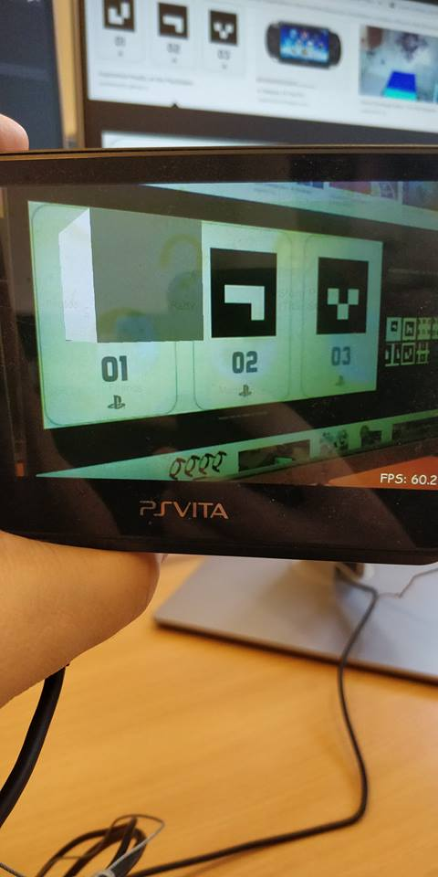
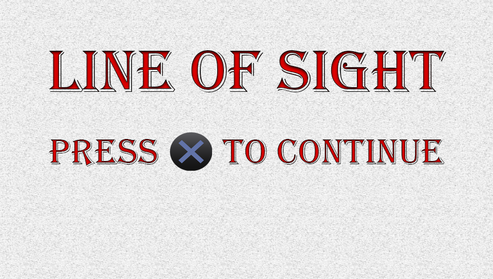
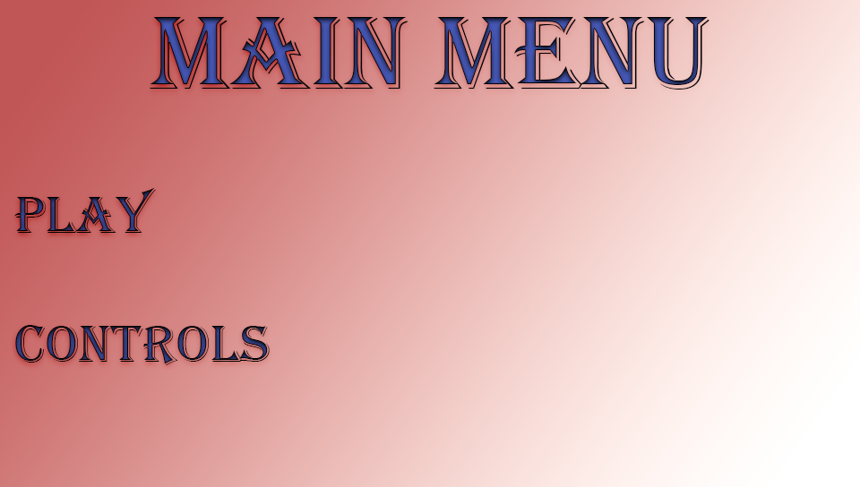
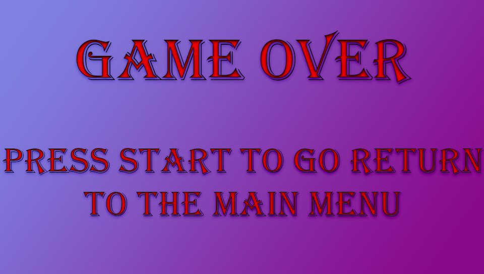

Vita Gallery

A screenshot of some basic use of augmented reality and the markers.

A splash screen I designed for the game.

A menu background I designed for the game, an arrow lets the user choose which option they would like to go to.
A control screen I designed for the game, it lets the player know the basic controls for the game

An end screen I designed for the game.